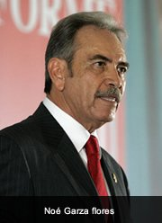

Garza García · rama Garza Flores

Diputado federal · Secretario de Desarrollo Rural de Coahuila · Rama Garza Flores · 1948 –
Ingeniero agropecuario y zootecnista coahuilense (n. 31 may 1948). Diputado federal (LXI Legislatura) y secretario de Desarrollo Rural de Coahuila (2011–2015). Tradición familiar lo sitúa como tío de Santos Javier Garza García; filiación por actas pendiente.
Noé Fernando Garza Flores nació el 31 de mayo de 1948. Su formación es en agropecuaria y zootecnia (maestría). La rama que lleva es Garza Flores: apellido paterno Garza y materno Flores, emparentada en la tradición oral con los Garza García del norte de Nuevo León.
En el museo se le coloca en la sala Garza García por el vínculo familiar que la tradición señala con Santos Javier Garza García (alcalde de Anáhuac 2009–2012): tío de Santos. Hasta incorporar actas civiles o eclesiásticas al archivo, ese parentesco queda como tradición familiar pendiente de prueba documental; no se afirma filiación directa sin documento.
Su carrera pública, según el perfil del Sistema de Información Legislativa (SIL) de la Secretaría de Gobernación, recorre instituciones del campo y la reforma agraria antes de llegar al Congreso de la Unión y a la Secretaría de Desarrollo Rural de Coahuila.
Se incluye entre los hombres ilustres de la sala Garza García / García Garza por su trayectoria pública en el noreste y por el vínculo familiar declarado con Santos Javier Garza García. El archivo prioriza cargos y fechas verificables en fuentes oficiales; la cadena genealógica completa se actualizará cuando entren actas al expediente.
Retrato aportado al archivo familiar (uso editorial del museo). Nombre completo según SIL: Noé Fernando Garza Flores.
Esta biografía también está publicada, con sus fuentes, en genealogiasefardi.site. Información avalada por Sefarad MX y genealogiasefardi.site.